From pair selection
to deformation evidence.
A visual review of Link5 methods, complete interactive case replays, Simple3D examples, and the pipelines behind them.
AUROC and pair-selection ablation
The transition-focused refine_v1 graph places more distance measurements near the mask’s narrow-to-broad transition. The earlier four-way Link5 result is shown alongside the new ablation.
Forearm labels: workbook v2, column AB. Label 1 is positive, label 0 is negative; label 0.5 is excluded. Higher rigidity predicts deformation; ties count as half.
| Run / method | AUROC | Binary videos | Severe / none | Comparison scope |
|---|
The historical four-way result covers 35 binary-labeled videos. Its matched-cohort row uses the same 32 identities as the new ablation. Previous rows use reported ε rigidity from the four-way summary; the new ablation uses saved full-precision scores. Masks, geometry, eligibility, and depth filtering also changed between runs, so this historical comparison does not isolate the effect of pair selection.
Label-policy sensitivity and exact source results
| AB label policy | Videos | balanced_v0 AUROC | refine_v1 AUROC |
|---|
40 primary videos match labels; additional COSMOS2.5_0018 is unlabeled. All 82 method/video scores completed. Five rejected-mask videos are excluded from this ablation.
Pair selection, seen in one frame
Two pictures of COSMOS3_0010, frame 0, rendered from the same method-replay viewer. The old graph is the measured naive baseline from the four-way run; the new graph is the measured refine_v1 graph from this ablation.
Before · naive baseline pairs
COSMOS3_0010 · frame 03D cloud + pair endpoints
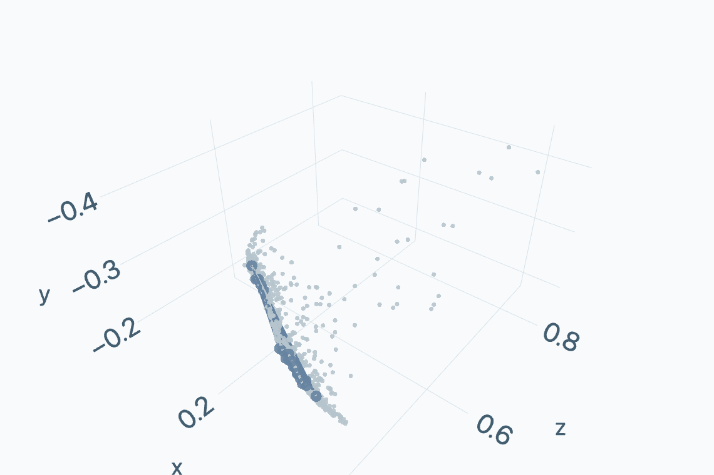
After · refine_v1 pairs
COSMOS3_0010 · frame 03D cloud + pair endpoints
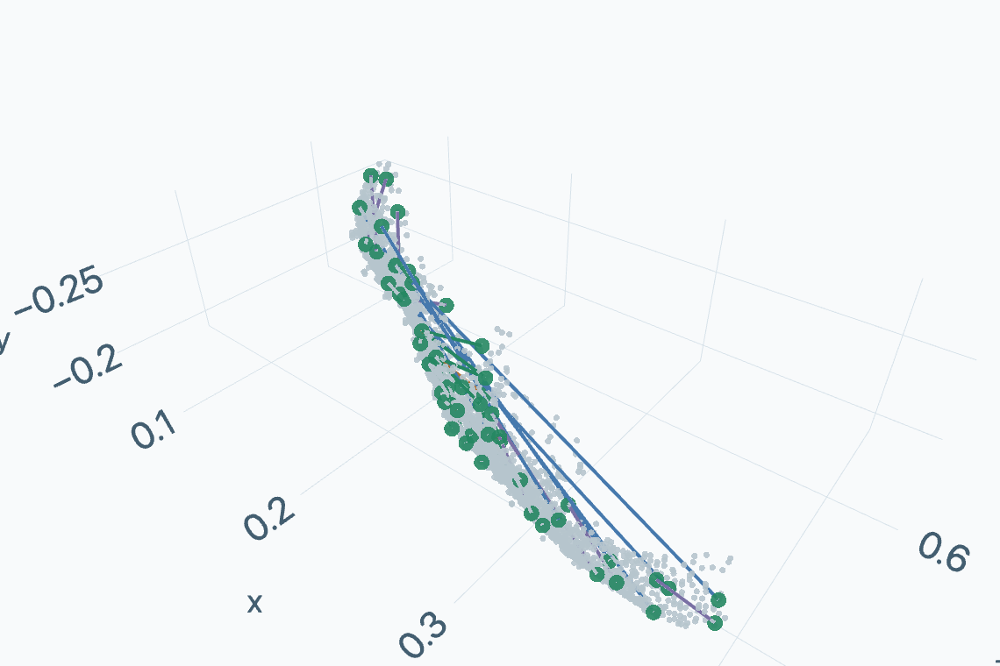
Pair-selection rationale · look closely at Link5
These crops follow Link5 in COSMOS2.5_0054 through the video. Inspect the upper and lower flanks where the narrow forearm widens into the broad housing: the local contour and surface appearance vary across intermediate frames. This motivates local pairs spanning both flanks and the width of the transition, alongside long pairs for whole-link coverage.
Reference · frame 0 0.00 s
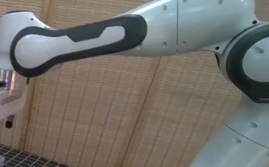
Intermediate · frame 23 1.44 s
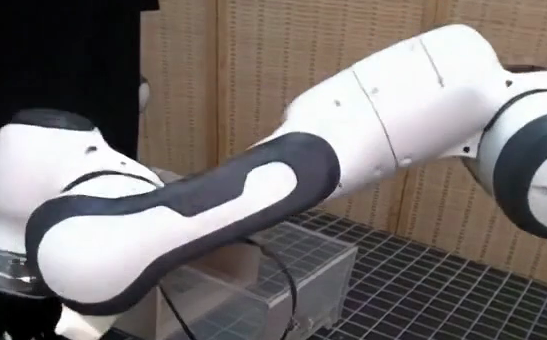
Intermediate · frame 46 2.88 s
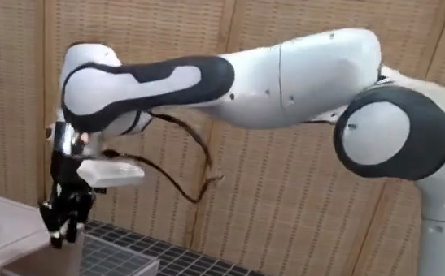
Intermediate · frame 69 4.31 s
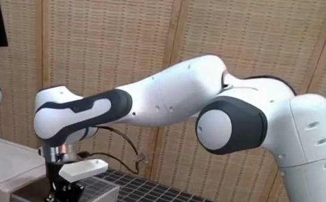
Each crop is centered on the saved Link5 mask and uses the same 547 × 340 source-pixel window, without resizing or rotation. Frame indices are zero-based; timestamps use the saved video’s 16 fps. These views motivate the geometric prior; pose also changes across frames. Watch the source video ↗ · Crop coordinates and provenance
Largest mask component → PCA axes → 101-bin width profile → widening transition.
6 upper-flank bridges, 6 lower-flank bridges, and 4 transverse pairs in the transition band.
6 long, 4 other transverse, and 4 other diagonal pairs. Freeze the graph at frame zero.
These pictures compare actual graphs from different runs. The controlled AUROC ablation instead compares balanced_v0 against refine_v1 using identical prepared inputs. The silhouette transition is a geometric prior, not an anatomical label.
Open interactive pair-selection replay · orbit and inspect endpoints
Depth filtering, before and after
The filter removes boundary pixels and sparsely supported depth samples. It preserves the coordinates of retained observations.
Before · visible tracked 3D samples
COSMOS3_0010 · frame 30Frame + depth rejection map

89 visible samples; 22 rejected samples shown in red.
Tracked 3D samples
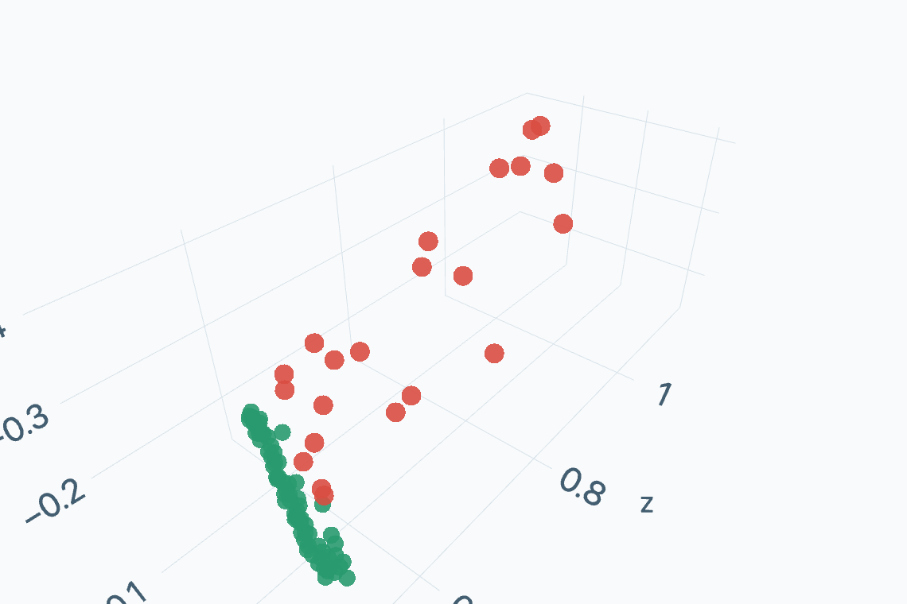
After · depth-supported samples
COSMOS3_0010 · frame 30Tracked 3D samples
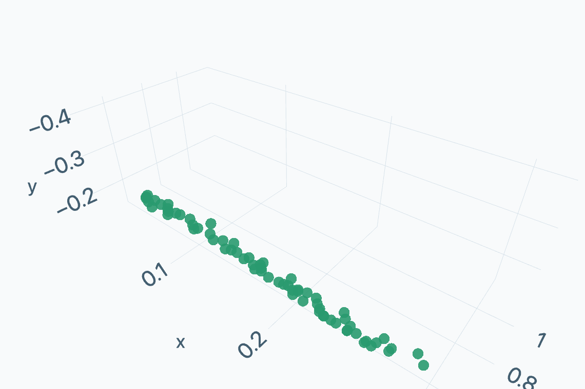
Remove a two-pixel boundary with a 5×5 elliptical kernel, then align the mask to the native CVD grid.
Mean distance to 32 neighbors, divided by the pixel footprint z / √(fx fy). Reject invalid or nonpositive camera depth.
Reject above max(3 × median, median + 6 × scaled MAD). Require ≥256 retained pixels and ≥50% mask retention.
Pictures use frame 30 of COSMOS3_0010, selected for the most rejected visible tracked samples. Full pixel rejection maps are retained locally. Unfiltered dense geometry remains on ERIS; the 3D before/after comparison uses retained tracked samples, not a reconstructed substitute for that dense cloud.
Open interactive depth-filter replay · compare the same 3D samples
How Link5 pixels are eroded
A two-source-pixel erosion moves the support boundary inward. The masks below show the original boundary and exactly which pixels each kernel removes.
Before · original Link5 mask
COSMOS3_0010 · frame 0Link5 mask on the source frame
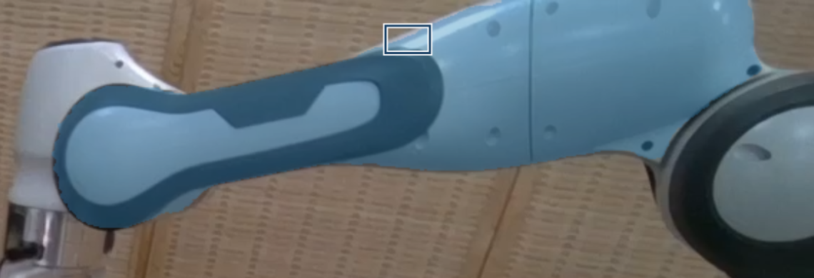
Blue: original mask. Outlined box: enlarged region below.
Boundary pixels · one square = one source pixel
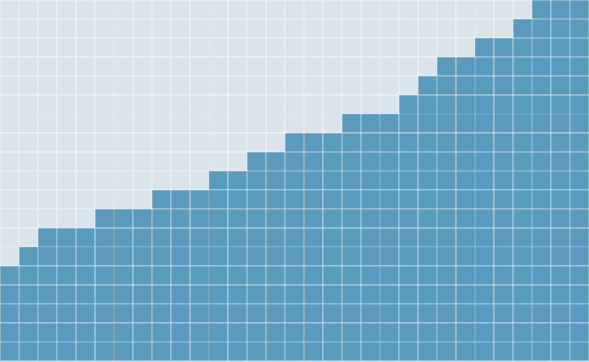
After · two-pixel erosion
COSMOS3_0010 · frame 0Link5 mask on the source frame
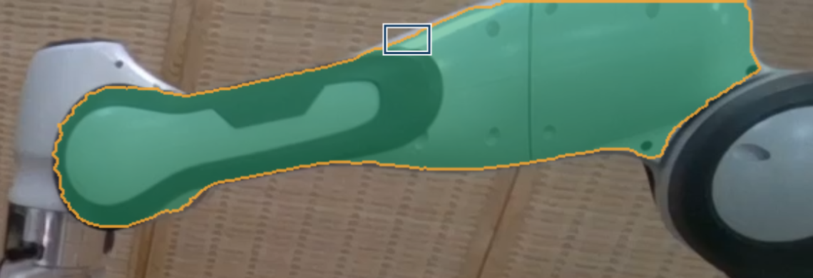
Green: retained · amber: removed. Outlined box: enlarged region below.
Boundary pixels · one square = one source pixel
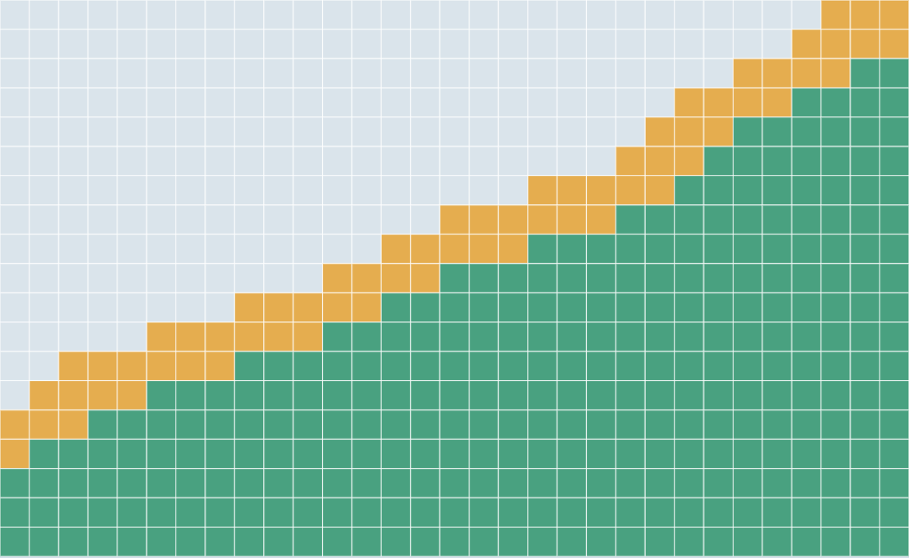
Two separate operations: tracker initialization uses the largest component with a 5×5 square kernel at frame zero. Depth support uses a 5×5 elliptical kernel on the intact source mask at every frame. Both use constant-zero borders before resizing.
Replay pixel erosion across all 189 frames · compare square and elliptical kernels
Total pairs used in final scoring
Absolute counts from the saved CoTracker pair evidence: Link2 from selected-45 V1 and Link5 refine_v1. Count each selected pair once for every frame in which it contributes a distance ratio to a fresh rigidity score.
| Link / method | Videos scored | Fixed pairs / video | Frames scored | Total pairs used | Mean pairs / scored frame | Carry frames excluded |
|---|
Total pairs used = Σ over saved scoring frames of the number of pair indices used. Reusing one fixed pair in ten frames counts as ten pair measurements. Fixed pairs / video is the number of unique selected graph edges in that video. Frame 0 is reference only; carry frames supply no fresh pair measurements and are excluded from these totals.
Link2: 44 of 45 selected videos scored; COSMOS2.5_0054 failed before CoTracker/V1, so it has no pair count. Link5: 40 primary videos + additional COSMOS2.5_0018. Link2 uses the saved V1 endpoint-visibility gate; Link5 additionally applies refined all-frame depth support. Counts describe these retained runs and their different eligibility rules.
Compare the same 39 videos
Same video identities and original frame grids. Pair graphs and depth-support policies remain different.
| Link / method | Videos scored | Fixed pairs / video | Frames scored | Total pairs used | Mean pairs / scored frame | Carry frames excluded |
|---|
Inspect total scoring pairs for every video
| Video / saved replay | Link | Fixed pairs | Frames scored | Total pairs used | Mean pairs / scored frame | Carry frames excluded |
|---|
All 41 cases, fully interactive
Choose a video and method, then play or scrub the synchronized source and point-cloud replay. Orbit in 3D, inspect a pair, or click the score history to seek. Both methods are available for every case.
| Video / replay | AB label | balanced_v0 | refine_v1 |
|---|
Score interpretation, exclusions, and downloads
Frame rigidity = MAD(r(t)) / (median(r(t)) + 10⁻⁶)
Video rigidity = mean over frames 1 … T−1
Fewer than three available pairs carries the previous score. Coherent scale changes and minority local changes can yield low MAD; the temporal mean can dilute brief events. Tracking and depth errors can raise rigidity. AUROC measures ranking, not a fitted decision threshold.
Excluded rejected masks: LVP_ROBOWM_0010, LVP_ROBOWM_0030, COSMOS3_0021, COSMOS3_0035, COSMOS2.5_0010. Additional COSMOS2.5_0018 has a replay and scores, but no AB label.
simple3D, overly localized deformation detection
Six randomly sampled cases from the completed pair-visible-anchor experiment. Inspect the source pixels, reconstructed clouds, and continuous point anomaly scores to examine how concentrated local contributions affect the scalar result.
45 videos · 450/450 comparisons completed. Two random videos per generator; fixed seed 20261011. These are an illustrative random sample, not cases selected for detection success or failure.
The official scalar is the mean of the top 80 saved point scores. The top-160 and top-320 options are alternative inspection views. The title describes the concern under review; the replay lets collaborators assess spatial concentration directly. Each pair has its own normalized reference and test cloud, without 3D registration.
Video → masks → fixed pairs → rigidity
SAM3 supplies masks, MegaSAM reconstructs geometry, and CoTracker3 supplies trajectories. The scorer lifts tracked pixels into world coordinates and measures changes in selected pair distances.

Purple marks refined Link5/Link7 masking, Link5 point-cloud depth filtering, and Link5 pair selection. Data dependencies from robot/ARCHITECTURE.md. Link5’s refined depth support applies on every original frame; later support changes pair availability, not the graph. The shared implementation obtains geometry before tracking.
| Point type | Created by | Purpose |
|---|---|---|
| SAM prompt points | Link5 / Link7 VLM review | Include or exclude mask material |
| Tracker queries | SIFT, corners, and grid | Initialize 2D trajectories |
| Pair endpoints | Frame-zero graph selector | Choose distances for rigidity |
Frame-zero pair selection does not make the full pipeline causal: masks can use later frames and backward propagation, and tracking can inspect the full sequence.
Link7 persistent masking · candidate frames, VLM points, and reseeding

With no confirmed VLM1 deformation, record that outcome; the caller determines base-mask use. “Naive masking” is a frame-zero mask initialization policy and is separate from naive pair ranking.
Link7 and the task object, coordinated
The object and gripper masking branches meet at the object-aware VLM3 gate. One committed final Link7 mask then feeds both robot scoring and object occlusion/cropping.

From link7_object_masking_occlusion_cropping.md, with the current failure policy from the executable coordinator guide: an exhausted required repair disables the case. The documentation’s retained historical diagram also describes older core-mask fallback behavior.
|Object ∩ Link7| / |Object| >95%, or |Link7| / |Image| ≥25%. VLM3 uses the earliest exact gate frame.
Object tracks and visibility → expected silhouette → available pixels → frame-zero mapping. Crop exclusions remain distinct from rigidity availability.
Recovery successors first, then area-ranked quotas 0/2/2/2/4 with earlier fallback. Identical normalized pair PNGs feed the gallery and AnomalyDINO.
The main object path uses CoTracker for occlusion; object MegaSAM and object 3D rigidity are separate experiments. Mask changes invalidate dependent preparation, scores, crops, and replays.